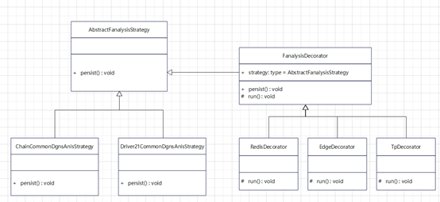

设计模式实战之装饰模式
概念介绍
装饰模式是指在不改变原类文件并且不使用继承结构的情况下，动态的扩展一个对象的功能。具体实现上是通过创建一个包装对象即一个装饰来包装真实对象，所以装饰模式又称为包装模式。
在装饰模式中主要有以下四个角色：
- Component，原始的抽象对象
- ConcreteComponent，具体的对象实现
- Decorator，抽象的装饰，主要定义了装饰者的行为以及与原始抽象对象之间的关系
- ConcreteDecorator，具体的装饰类

问题分析
在模型计算的设计中我们采用了模板方法定义了模型运算的基本框架，

在Persist方法中我们主要实现计算结果保存到数据库，但是实际项目中会有更多针对模型结果的需求：
- 发送统计到Redis
- 发送到第三方平台进行展示
- 回写网关进行反向控制
目前的做法是在抽象类中实现相应的公用方法，然后到具体的实现类决定是否调用这些方法。

如上图所示，在长链条的实现类里面调用了发送统计和反向控制两个方法，而驱动单元的实现类只调用了发送统计的方法。这样实现的问题是对于策略本身的侵入式实现导致策略实现无法灵活的增加和删除这些额外的增强功能，无法满足开闭原则。
这时候我们可以换一种视角来看待这些增强，将发送统计、发送第三方和发送边缘视为策略的装饰，那么使用装饰模式来实现这些增强就显得恰到好处了。
详细设计
使用装饰模式之前我们首先进行角色确认
- Component，原始的抽象对象，对应我们实例中的AbstractFanalysisStrategy
- ConcreteComponent，具体的对象实现，在我们的实例中包含了长链条的策略实现和驱动单元的策略实现
- Decorator，抽象的装饰器，需要新定义的接口FanalysisDecorator
- ConcreteDecorator，具体的装饰器实现，包含了RedisDecorator，ThirdPartyDecorator和EdgeDecorator
类图如下：
通过FanalysisDecorator实现了抽象类的persist方法，同时定义作为增强类的统一行为run方法，FanalysisDecorator类的代码实现如下：
1 | public abstract class FanalysisDecorator extends AbstractFanalysisStrategy{ |
在每个装饰实现类的run方法中实现具体的增强逻辑，对应之前抽象类中的公共方法。这样在调用的地方就可以由客户端等高层模块决定如何去增强而无需侵入原实现类了。
1 | //获取初始策略 |
通过上面的装饰模式实现可以很好的实现功能的动态增强而无需修改原策略类。
总结回顾
在这个例子中我们结合了模板方法和装饰模式对模型计算功能进行动态增强。
我们在原始的实现中只是使用了模板方法，通过抽象类实现了功能的可复用，这种方式我们称之为静态增强。这时候如果需要新增新的增强方式，需要涉及抽象类的修改和模型实现类的修改，无法满足开闭原则，扩展性不好。
如果引入装饰模式，使用包装类的方式对原始功能进行增强，理论上可以增加任意多的增强。装饰类的新增只需要高层模块的修改，不涉及已有功能的改动，符合了开闭原则。
实际应用中可以结合模板方法，动静结合的对类进行增强。同时需要注意包装类的数量不宜过多，太多的增强可能引发代码复杂度的急剧增加带来维护的难度。